BLAST SLAM VIII2.10 · PARIVISION — LGD
9Class
Эдгар Налтакян
PARIVISIONПозиция 4 · Саппорт
BLAST SLAM VIII2.10 · PARIVISION — LGD — за первое место в группе A
#012 / 400Сезон 1
95
 95 М
95 М67%
 73 М
73 М67%
 72 М
72 М65%
9Class
Эдгар Налтакян
82FRM60FGT47POOL91SUR36VIS67FORM
PARIVISION
9Class#012 / 400 · Сезон 195
- Форма82
- Драки60
- Пул героев47
- Выживание91
- Обзор36
- Игра сейчас67
- Rubick95 матчей67%
- Dark Willow73 матчей67%
- Monkey King72 матчей65%
Последние 10 матчей
- В
- В
- П
- В
- П
- В
- П
- В
- П
- В
1018профматчей
65 %побед
5титулов Tier 1
$964Kпризовых
5 титулов Tier 1 и финал TIEWC 2026, DreamLeague ×2, ESL One ×2
Путь от пабликов до финала The International
2020 — 20229Паблик и миксы
Moscow Esports 2020 (CSB), открытые квалификации. 16 000 пабликов впереди
12.2022WBWinter Bear
Квалификации DPC EEU 2023 Tour 1
01.2023 — 11.2023SXTeam Sexy
Второй дивизион DPC: 3-е и 2-е место. European Pro League S10 и S11 — победы
01.2024 — 10.2024

Tundra EsportsПервый Tier 1: 3-е место ESL One Birmingham, 4-е Riyadh Masters
10.2024 — сейчасPARIVISION
5 титулов Tier 1, 3-е место TI 2025, 2-е место TI 2026
12 00030.09.202313 00024.02.202414 00007.10.202416 00021.05.20251-й ранг26.09.2026
 Гранд-финал TI 2026, карта 5 — Team Spiritdota2 · 23.08.2026
Гранд-финал TI 2026, карта 5 — Team Spiritdota2 · 23.08.2026
YouTube матчи TI 2026 и влоги команды
 Гранд-финал TI 2026, карта 1 — Team Spiritdota2 · 23.08.2026
Гранд-финал TI 2026, карта 1 — Team Spiritdota2 · 23.08.2026 Влог: чемпионы Esports World Cup 2026PARIVISION · 07.2026
Влог: чемпионы Esports World Cup 2026PARIVISION · 07.2026 Финал верхней сетки TI 2026 — Team Yandexdota2 · 22.08.2026
Финал верхней сетки TI 2026 — Team Yandexdota2 · 22.08.2026 Влог: чемпионы DreamLeague S29PARIVISION · 05.2026
Влог: чемпионы DreamLeague S29PARIVISION · 05.2026 MIND GAMES: Satanic, No[o]ne, 9Class, DukalisPARIVISION · 02.2026
MIND GAMES: Satanic, No[o]ne, 9Class, DukalisPARIVISION · 02.2026 Why 9class is JUST BETTER!Tundra · 04.2024
Why 9class is JUST BETTER!Tundra · 04.2024Соцсети
✈Telegramдевятыйкласс13,3 тыс.подписчиков▶Twitchtwitch.tv/9class1 203зрителей в среднем◎Instagram9class_edфото с турнироввVKid582302782страница
Последние матчи K / D / A · GPM
RubickBLAST SLAM VIII2 / 2 / 9262 GPMПобеда29.09Dark WillowBLAST SLAM VIII3 / 8 / 12313 GPMПобеда29.09RubickTI 2026 · финал, карта 52 / 11 / 23285 GPMПоражение23.08 Keeper of the LightTI 2026 · финал, карта 43 / 4 / 20461 GPMПобеда23.08
Keeper of the LightTI 2026 · финал, карта 43 / 4 / 20461 GPMПобеда23.08 MarciTI 2026 · финал, карта 32 / 8 / 11277 GPMПоражение23.08RubickTI 2026 · финал, карта 20 / 13 / 38338 GPMПобеда23.08
MarciTI 2026 · финал, карта 32 / 8 / 11277 GPMПоражение23.08RubickTI 2026 · финал, карта 20 / 13 / 38338 GPMПобеда23.08 HoodwinkTI 2026 · финал, карта 15 / 14 / 8300 GPMПоражение23.08Dark WillowTI 2026 · верхняя сетка8 / 6 / 16381 GPMПобеда22.08Dark WillowTI 2026 · верхняя сетка3 / 6 / 6301 GPMПоражение22.08Keeper of the LightTI 2026 · верхняя сетка7 / 0 / 20561 GPMПобеда22.08
HoodwinkTI 2026 · финал, карта 15 / 14 / 8300 GPMПоражение23.08Dark WillowTI 2026 · верхняя сетка8 / 6 / 16381 GPMПобеда22.08Dark WillowTI 2026 · верхняя сетка3 / 6 / 6301 GPMПоражение22.08Keeper of the LightTI 2026 · верхняя сетка7 / 0 / 20561 GPMПобеда22.08Факты из интервью и статистики
9 классНик остался со школы: думал, что с высоким рейтингом и таким ником возьмут в академию
19.07Выиграл Esports World Cup 2026 в свой день рождения — финал 3:1 с BetBoom
1400 dpi«Играл всю жизнь на 2000 dpi, поставил 1400 во время плей-офф — и выиграл турнир»
16 000MMR в мае 2025 — один из немногих саппортов, кто взял 16k
955Игр на Pudge в пабликах. Puppey: «лучший игрок на Пудже в мире»
0 / 13 / 38Rubick во второй карте финала TI 2026 — 38 ассистов и победа